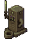

Cabaña de la Bruja


La Cabaña de la Bruja se encuentra en el Pantano de la Bruja, y se vuelve accesible despues de completar la misión "El talismán oscuro".
Dentro de la Cabaña de la Bruja hay tres altares, la Tinta mágica perdida del Mago (sobre una mesa en un frasco morado) y una runa roja de teletransporte en el suelo. Al devolver la Tinta Mágica al Mago se desbloquean cinco edificios mágicos para La granja. Al pisar la runa, el jugador se teletransportará directamente al sótano de la Torre del Mago.
Una vez que el jugador haya conseguido 4 corazones de amistad con el Mago, las runas de teletransporte situadas en la Choza de la Bruja y en el sótano de la Torre del Mago podrán utilizarse en cualquier momento para teletransportarse entre ambas ubicaciones. Antes de conseguir 4 corazones, el jugador será teletransportado al sótano del Mago desde la Cabaña de la Bruja, pero no podrá volver.
Altares
| Imagen | Nombre | Descripción | Costo |
|---|---|---|---|

|
Altar oscuro del olvido | La relación con tu expareja quedará borrada de su memoria. Será como si nunca os hubieseis conocido. Nota: Esto también afecta a Krobus como ex compañero de piso. |
|

|
Altar oscuro del egoísmo | Tus hijos se convertirán en palomas y saldrán volando... Nota: Esto los elimina permanentemente del juego. |
|
|  | Altar oscuro del terror | El antiguo sello mágico de protección quedará anulado, permitiendo que aparezcan monstruos en tu granja al caer la noche. Nota: Este altar actúa como un interruptor para activar o desactivar los monstruos. Funciona en todos los Tipos de Granja, incluido el Salvaje. Restaurar el "sello mágico" requiere otro Bollo Extraño. |
Misiones
La cadena de misiones para acceder a la Cabaña de la Bruja involucra dos misiones, las cuales estarán disponibles después de completar los lotes del Centro Cívico o el Formulario de proyectos de desarrollo comunitario de Joja. El Jugador puede activar una escena en el Ferrocarril, donde el Mago te pedirá que encuentres el talismán oscuro, que puede ser encontrando dentro de la Madriguera de Bichos Mutantes. Puedes acceder a la Madriguera de Bichos Mutantes hablando con Krobus, quien te revelará la entrada en Las cloacas. Después de obtener el talismán oscuro, regresa al Ferrocarril y ponlo en el artefacto que bloquea la cueva. Dentro de la cueva, hay una runa de teletransportación que te conduce al Pantano de la Bruja.
Una vez adentro del pantano, el Esbirro de la Bruja estará bloqueando la entrada a su Cabaña. Él solo permitirá que el jugador pase si le das una Mayonesa sombría, que a su vez también completa la misión Problema trásguico. Recupera la Tinta mágica dentro de la Cabaña de la Bruja, y luego regrésasela al mago, quien desbloqueará los cinco Edificios del Mago para La granja.
| Nombre de la Misión | Texto de la Misión | Dada por | Requisitos | Recompensas |
|---|---|---|---|---|
| El talismán oscuro | El mago me ha pedido que recupere la tinta mágica que hay en casa de su exmujer... Pero para poder entrar necesitaré un talismán oscuro. Entra en la cloaca y pide información a Krobus sobre el talismán oscuro. | Entra al Ferrocarril después de completar los lotes del Centro Cívico o el Formulario de proyectos de desarrollo comunitario de Joja. | Habla con Krobus para tener acceso a la Madriguera de Bichos Mutantes, luego obtén el talismán oscuro. Luego regresa al ferrocarril y pon el talismán oscuro en el artefacto que bloquea la cueva. |
|
| Problema trásguico | Hay un trasgo que bloquea el camino a la cabaña de la bruja. Tiene que haber alguna manera de obligarlo a moverse... Tal vez deberías buscar más información sobre los trasgos. | Completa la misión El talismán oscuro | Habla con el Esbirro de la Bruja, en el pantano, y dale una Mayonesa sombría para obtener acceso a la Cabaña de la Bruja. Encuentra la Tinta mágica y regrésasela al Mago. |
|
Galería

Historial
- 1.1: Introducido.